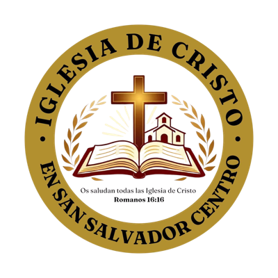

Misión
Ser la luz del mundo guiando almas a Cristo a través de la predicación del evangelio.

Hablamos donde la biblia habla, callamos donde la biblia calla.


Ser la luz del mundo guiando almas a Cristo a través de la predicación del evangelio.
Alcanzar la salvación y la vida eterna en la presencia de Dios.
Santidad, unidad y servicio.
| Día | Reunión | Hora |
|---|---|---|
| Martes | Día de oración | 5:30 – 6:30 PM |
| Jueves | Clase bíblica | 5:30 – 6:30 PM |
| Sábado | Clase de mujeres | 3:00 – 4:00 PM |
| Sábado | Clase de varones | 3:00 – 4:00 PM |
| Domingo | Culto de adoración y clase bíblica | 8:20 – 11:00 AM |
| Domingo | Culto de adoración | 2:00 – 3:00 PM |